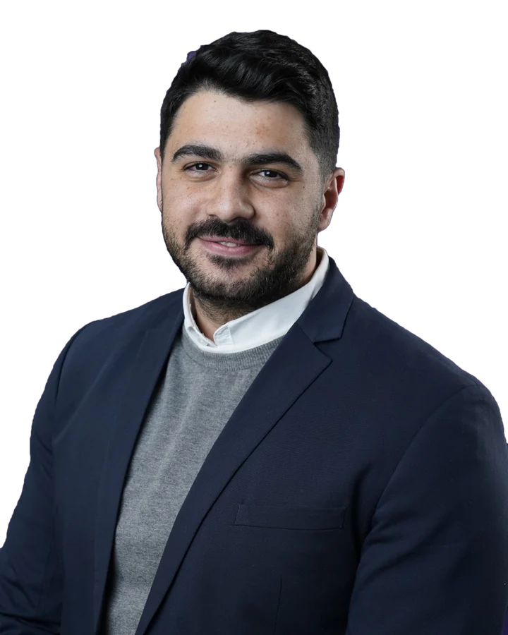
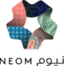
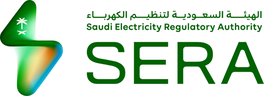
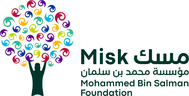
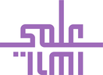
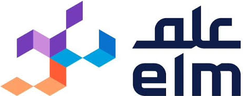

I'm Osama Elmelegy, based in Riyadh. For thirteen years I've helped government and enterprise teams in Saudi Arabia turn complex requirements into platforms that work. Today I build AI use cases on enterprise and locally hosted LLMs, and take them from proof of concept to production.
AI use cases · Local LLMs · Proof of concept · Client engagement

13+
YearsFrom analysis to AI
CBAP · PMI-PBACertified business analyst
RiyadhSaudi Arabia
Organizations I've worked with





About me
Requirements first, technology second.
I started my career as a business analyst, and that still shapes how I work. Before any platform conversation, I want to understand the process, the people who run it and the number that should move.
Along the way I worked on national government platforms at Elm, on FedEx's e-commerce rollout in Saudi Arabia during COVID, and today, as an Enterprise AI Solutions Consultant at envnt., on AI and low-code work across OutSystems, IBM, Microsoft, Oracle and Humain.
Today most of my work is building AI use cases with government and enterprise entities: finding where AI fits in their operations, shaping the business case and proving it with a working proof of concept.
Much of it runs on locally hosted LLMs, designed together with in-Kingdom cloud and AI vendors such as Google Cloud, Oracle, Humain and Alibaba Cloud, so sensitive data stays where it belongs.
Requirements first
Every engagement starts with the process and the people, not the tool.
Proof before budget
A working proof of concept settles debates faster than any slide.
Secure by design
Sovereign AI that keeps sensitive government data where it belongs.
Built for the Kingdom
Solutions shaped around Saudi regulation and Vision 2030 priorities.
Approach
From idea to production, one step at a time.
Each step has to earn the next one, so investment follows evidence.
01
Use case
Find where AI pays off and score it against a clear business case.
02
Discovery
Workshops with business and IT to pin down requirements, data and readiness.
03
Proof of concept
A working POC on the real process, shown to decision makers.
04
Production
Solution architecture and platform choice to take it live.
LLMs and sovereign AI
Local LLMs, hosted where the data lives.
Many of the entities I work with cannot send their data to a public AI service. A large part of my work is designing solutions on locally hosted large language models and deciding, with local vendors, where each model should run.
Models
Local and open LLMs
Open models such as Llama and Falcon and Arabic-first models such as ALLaM, alongside enterprise models, deployed on-premise or in in-Kingdom cloud regions.
Knowledge
RAG on the client's own content
Answers grounded in the entity's regulations, policies and documents, with the source shown, so staff can trust and check every response.
Automation
Multi-agent workflows
Chains of specialized agents that classify, validate, decide and report, with a person approving the steps that matter.
Evaluation
Test before you commit
Models compared on Arabic quality, accuracy, speed and cost against the client's real cases before any platform decision.
Where the model runs
Hosting chosen with local vendors, not for them.
I work directly with the local teams of cloud and AI providers on sizing, pricing, licensing and hosting, so each solution fits Saudi data residency requirements and the client's budget.
Google Cloud
Oracle Cloud
Humain
Alibaba Cloud
IBM watsonx
Microsoft Azure
On-premise
For highly classified data. The model runs inside the entity's own data center.
In-Kingdom cloud
For sensitive data that must stay in Saudi Arabia, with cloud scale and managed services.
Hybrid
Sensitive steps stay local; public or low-risk content uses larger hosted models.
Client engagement
From the first meeting to a signed program.
AI only delivers when the right people commit to it. Alongside the technical work, I lead the client relationship from the first executive conversation to a funded, delivered program.
Executives
C-level engagement
Advisory conversations, executive presentations and live demos with CEOs, CIOs and CDOs that turn interest into decisions.
Accounts
Long-term relationships
Trust built over years with government and enterprise entities, leading to repeat work and growing accounts.
Partners
Vendor and partner network
Working with OutSystems, IBM, Microsoft, Oracle, Humain and cloud providers to bring the right solution to each client.
Deals
Proposals and targets
Tender responses, pricing and business cases that stand up to procurement review, managed as a pipeline against growth targets.
Selected work
Projects and use cases.
AI use cases and digital platforms for ECZA, SERA, NEOM, Misk Foundation and others, from first workshop to working solution.
AI use cases2024 – present
Building AI use cases with government and enterprise entities
Sector Government and enterpriseRole Enterprise AI consultant
Challenge
Large organizations arrive with long AI wish lists and no shared way to rank them, so pilots start in the wrong places.
What I did
Built use case assessment frameworks and AI readiness evaluations
Ran discovery workshops with business and IT leadership
Designed digital operating models for large government organizations
Took the strongest use cases to executive demos and proofs of concept
Impact
A repeatable way to go from AI ideas to a ranked, costed shortlist, used across several sectors.
AI strategy
Readiness
Operating model
POC
Engagement lead
From operating model to AI-powered e-services for Saudi economic zones
Client Economic Cities and Special Zones AuthorityRole Engagement lead
Challenge
ECZA needed a one-stop shop where investors and developers in the economic zones get every license, permit and accreditation in one place, backed by an operating model that dozens of government and private entities could work within.
What I led
Operating model: led the engagement from the as-is study, benchmarks and gap analysis to the to-be services, one-stop-shop guide and governance
E-services: took the prioritized services through detailed process mapping to implementation on the Integrated Governmental Services portal
AI layer: an investor onboarding assistant (regulation chat, zone recommendation, lead scoring) and a smart eligibility engine that pre-fills forms, validates and summarizes documents and drafts the eligibility report
Impact
150+government services
25+integrated entities
24/7AI investor guidance
Operating model
One-stop shop
OutSystems
RAG
Document AI
AI and process mining
AI use cases and process mining for the electricity regulator
Client Saudi Electricity Regulation AuthorityRole AI and process mining consultant
Challenge
Consumer complaints arrive through several channels, including formal telegraphs, and each one is classified, checked, routed and resolved by hand. Nobody had a full view of where customer journeys actually slowed down.
What I did
Worked with SERA's stakeholders to define and prioritize the AI use cases
Complaints multi-agent system: six AI agents that classify, create, examine, detect missing data, recommend a decision and report
Process mining project: mapped seven core customer journeys, from outage management and complaints to billing, new connections and social media
Impact
6autonomous AI agents
7customer journeys mapped
E2Ecomplaint to resolution
Process mining exposed the bottlenecks in outage alarms and ticket creation, leading to faster restoration.
Multi-agent AI
Process mining
Classification
Digital experience
An intranet portal and super app for the NEOM community
Client NEOMRole Solution consultant
Challenge
NEOM's employees and guests dealt with many separate channels for everyday services. The community needed one consistent experience on web and mobile, available anytime and anywhere.
What I worked on
Intranet portal: a single place for employees to reach internal services and information across NEOM
Super app: one mobile application for employees and guests within the NEOM community, bringing their services together
Unified experience: single sign-on and a consistent journey across web and mobile channels
Impact
One unified digital experience for the NEOM community, built on a low-code platform so new services can be added quickly as needs change.
Intranet
Super app
OutSystems
SSO
2026
The assessment phase of the ilmi digital platform
Client Misk FoundationRole Project lead
Challenge
Several business owners, a multi-vendor setup and a design team all needed to agree on one route from requirements to sign-off.
What I did
Designed a 14-step service design workflow across requirements, design and approval
Set up workstreams for functional, architecture, UX, data, compliance and vendor governance
Led status reporting to ilmi's business owners
Impact
14step workflow
3phases to sign-off
6assessment workstreams
Service design
Governance
PMO
2026
Reviewing an enterprise data, BI and AI tender before release
Client Misk FoundationRole Technical reviewer
Challenge
An RFP for a data lakehouse, BI dashboards, integration across subsidiaries and AI decision intelligence over twelve months. If vendors can't be compared fairly, a tender this size fails quietly.
What I did
Mapped scope and phasing, and flagged an overloaded phase
Audited vendor controls: pre-qualification, financial standing, key people
Checked the bill of quantities against hosting and evaluation rules
Impact
Missing and blank sections caught before issue
Showed bids couldn't be compared like-for-like as written
Surfaced a conflict between fixed hosting and platform-agnostic scoring
Lakehouse
BI
Decision intelligence
Procurement2026
A line-by-line pricing review for an inspection platform tender
Sector Field inspectionRole Commercial reviewer
Challenge
In tendering, one missing line item can put a bid at risk, and onsite and offshore staffing mixes make proposals hard to compare.
What I did
Benchmarked each proposal against reference cost estimates
Checked every required item against the tender booklet
Reviewed staffing structures and resource distribution
Impact
Found a license pricing mismatch and a missing training and knowledge-transfer item that carried a compliance risk.
Tendering
Cost baselines
Compliance
2017 – 2019
MASARAT fleet management and E-Inspection
Sector Government platformsRole Senior BSA
Challenge
Turning complex regulatory and operational rules into national products that many government entities could adopt.
What I did
Translated regulatory requirements into workflows and technical specifications
Built process models and requirements in line with Saudi e-government standards
Took part in go-to-market planning for both launches
Impact
Both products launched for government entities.
SaaS
BPMN
Go-to-market
2019 – 2022
E-commerce shipping for Saudi retailers through COVID-19
Sector LogisticsRole Customer solutions
Challenge
When stores closed, retail clients moved online almost overnight and needed shipping that fit Saudi customs rules while volumes changed every week.
What I did
Helped implement FedEx's e-commerce strategy for the Saudi market
Supported a shipping manager solution automated end to end and integrated with customs
Worked across logistics, IT and sales on client delivery
Impact
Business continuity for major retail clients during the pandemic.
E-commerce
3PL
Customs integration
Articles
Notes from the field.
Short pieces on AI use cases, proofs of concept and digital government, written from real engagements.